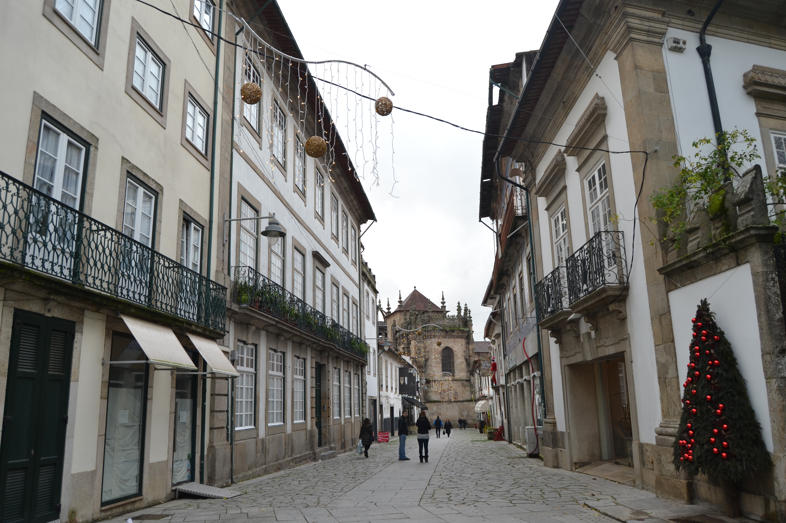
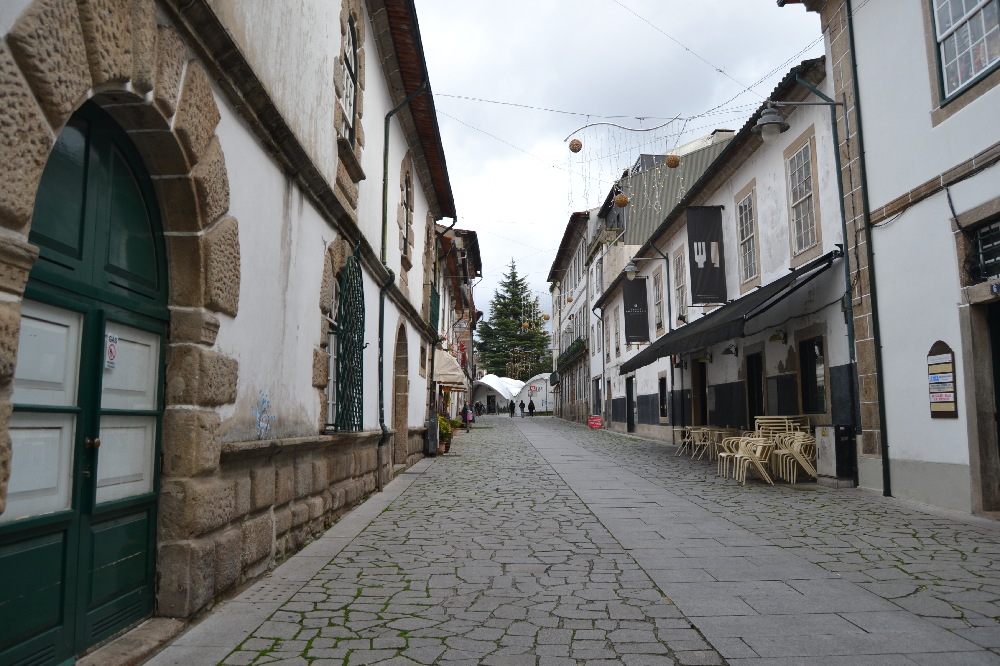

Rua de S.João
Fotos atuais


Fotos antigas

Rua de S.João - vista norte.

Rua de S.João - vista sul.
Descrição
Nela se fixaria a família dos Coimbras — família que acompanhou D. Diogo na sua vinda para Braga — em casa hoje reconstruída noutro local e desenhada por João de Castilho; os Paiva Marinho, na notável casa dos Paivas, riscada em finais do séc. XVI por alguém que passou por Florença e procurou transplantar um pouco da arquitectura do Palácio Pitti; a irmã do Cónego Francisco Pacheco Pereira na grande casa do Passadiço; e os Lagos e os Antões Pereira em casas mais simples, mas não menos belas, que no Mappa se vêem com os nºs 9 e 10.
Casas
| Número | Dono | Preço | Descrição |
|---|